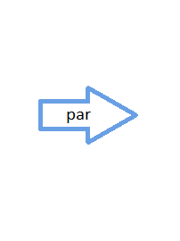

Évaluation d’expressions en R et environnements
Lorsque nous soumettons des instructions dans la console, R doit chercher la valeur des objets nommés dans ces instructions. Ces objets peuvent être de n’importe quel type : des fonctions, des vecteurs, des listes, etc. La façon dont R s’y prend pour trouver les valeurs de ces objets est plutôt complexe. Je ne vais pas expliquer ce point en détail. Une bonne référence pour en apprendre plus sur le sujet est le blogue suivant :
http://blog.obeautifulcode.com/R/How-R-Searches-And-Finds-Stuff/
Je vais tout de même expliquer le principe général simplifié derrière l’évaluation d’expressions en R. À l’ouverture d’une session R, certains packages sont automatiquement chargés. Le contenu de chaque package chargé est placé dans ce qui est appelé un environnement. Les objets R que nous créons pendant une session R sont aussi conservés dans un environnement : l’environnement de travail (aussi appelé environnement courant ou environnement global). Lorsque R a besoin d’évaluer un objet apparaissant dans une expression soumise dans la console, il démarre une recherche de cet objet dans les environnements ouverts. La recherche débute dans l’environnement de travail. Si l’objet recherché n’est pas trouvé dans cet environnement, la recherche se poursuit dans les environnements des packages chargés, en commençant par les packages les plus récemment chargés.
La figure 1 illustre le chemin de recherche parcouru par R pour évaluer les expressions soumises dans la console. La recherche part de l’environnement du haut et descend dans les environnements en dessous, jusqu’à ce que l’objet recherché soit trouvé. C’est le nom d’un objet qui permet de l’identifier.
Figure 1: Chemin de recherche parcouru par R pour évaluer les expressions soumises dans la console
Il existe quelques exceptions à cette façon de rechercher la valeur d’expressions en R. Les points suivants décrivent quelques-unes de ces exceptions.
Évaluation du corps d’une fonction
Lors de l’évaluation du corps d’une fonction (code composant la fonction), des environnements s’ajoutent au début du chemin de recherche décrit ci-dessous, uniquement le temps de l’évaluation de la fonction. Tous les détails seront fournis au prochain cours.
Évaluation d’expressions dans une formule ou dans un appel à la fonction subset, transform ou une fonction du tidyverse possédant un argument data ou .data
Les fonctions R prenant en entrée une formule, prennent aussi toutes en entrée un argument data. Si un data frame est donné à cet argument, ce data frame devient un environnement de plus, qui s’ajoute à la liste des environnements parcourus lors de la recherche de la valeur d’un objet R. Cet environnement vient en premier dans la liste, la recherche débute donc par lui. Dans une formule, les noms des colonnes de data deviennent donc des objets directement accessibles (plus besoin d’utiliser la syntaxe data$nomColonne). Il en est de même dans l’expression fournie à l’argument subset souvent présent dans les fonctions prenant en entrée une formule.
Les fonctions subset et transform, que nous avons déjà vues, ainsi que toutes les fonctions du tidyverse possédant un argument data ou .data, ont le même genre de comportement. Le data frame donné au premier argument devient l’environnement d’où part la recherche des valeurs associées aux noms d’objets dans les expressions fournies aux arguments suivants.
Illustrons ce type d’évaluation avec la fonction subset. Supposons que nous voulons extraire du jeu de données iris du package datasets les observations de Petal.Length et Petal.Width pour lesquelles Sepal.Width est supérieure à 4, nous pouvons utiliser la commande
## Petal.Length Petal.Width
## 16 1.5 0.4
## 33 1.5 0.1
## 34 1.4 0.2plutôt que
ou
La commande suivante ne fonctionne pas
## Error in `[.data.frame`(iris, Sepal.Width > 4, c(Petal.Length, Petal.Width)) :
## object 'Petal.Length' not foundparce que Sepal.Width, Petal.Length et Petal.Width sont des noms d’objets dont R doit trouver les valeurs. Le chemin de recherche parcouru par R pour trouver ces valeurs débute dans l’environnement de travail et se poursuit dans les environnements des packages chargés, en commençant par les packages les plus récemment chargés. R retourne une erreur, car il ne trouve nulle part ces objets. Il y a bien des colonnes du data frame iris qui portent les noms de ses objets, mais il ne s’agit pas d’objets directement accessibles. Ce sont des éléments dans un objet.
Dans la commande subset(iris, subset = Sepal.Width > 4, select = c(Petal.Length, Petal.Width)), R doit aussi trouver la valeur des objets Sepal.Width, Petal.Length et Petal.Width. Il trouve cette fois ces objets, car la fonction subset modifie le chemin de recherche de R (mais uniquement le temps de l’évaluation de l’appel à cette fonction). Elle ajoute au tout début du chemin de recherche un environnement, contenant les colonnes du data frame fourni comme premier argument. Dans l’exemple, l’environnement ajouté au chemin de recherche contient donc des vecteurs nommés "Sepal.Length", "Sepal.Width", "Petal.Length", "Petal.Width" et "Species", soit les colonnes de iris.
Le chemin de recherche utilisé par R pour évaluer les expressions données à subset dans cet exemple est illustré dans la figure 2.

Figure 2: Chemin de recherche parcouru par R pour évaluer les expressions données en argument à la fonction subset dans l’exemple
Les fonctions with et within
Les fonctions with et within permettent d’étendre la possibilité d’ajouter un data frame au début de la liste des environnements dans le chemin de recherche à n’importe quelles instructions R. Elles s’emploient avec la syntaxe suivante :
with(data = nom_data_frame, expr = expression)
où expression est une commande R, ou encore plusieurs commandes R encadrées d’accolades.
Par exemple, les deux bouts de code suivants retournent le même résultat.
var_catego <- cut(
x = iris$Sepal.Length,
breaks = c(-Inf, quantile(iris$Sepal.Length, probs = c(1/3, 2/3)), Inf),
right = FALSE
)
table(var_catego, iris$Species)
# équivalent à :
with(iris, {
var_catego <- cut(
x = Sepal.Length,
breaks = c(-Inf, quantile(Sepal.Length, probs = c(1/3, 2/3)), Inf),
right = FALSE
)
table(var_catego, Species)
})## Species
## var_catego setosa versicolor virginica
## [-Inf,5.4) 40 5 1
## [5.4,6.3) 10 31 12
## [6.3, Inf) 0 14 37
Avec with, les préfixes nom_data_frame$ ne sont plus requis.
La fonction within est pour sa part une sorte d’alternative à la fonction transform. Les expressions fournies en entrée vont modifier le data frame ou la liste donné comme premier argument. La fonction retourne une copie modifiée de cet objet. Voici un exemple.
## height weight
## 1 58 115
## 2 59 117
## 3 60 120
## 4 61 123
## 5 62 126
## 6 63 129## height weight weight2
## 1 4.833333 115 13225
## 2 4.916667 117 13689
## 3 5.000000 120 14400
## 4 5.083333 123 15129
## 5 5.166667 126 15876
## 6 5.250000 129 16641La fonction attach
Certains d’entre vous connaissent peut-être la fonction attach. Cette fonction permet d’ajouter un data frame dans le chemin de recherche, juste en dessous de l’environnement de travail. Par exemple, la commande
modifie le chemin suivant

Je ne recommande pas l’utilisation de attach, car si l’environnement de travail contient déjà un objet portant le même nom qu’une colonne du data frame attaché, c’est l’objet dans l’environnement de travail qui sera retourné plutôt que la colonne du data frame si nous utilisons ce nom dans nos instructions. Ce comportement s’explique par le fait que l’environnement de travail demeure le point de départ du chemin de recherche avec attach, alors qu’avec with c’est le data frame qui est le point de départ du chemin de recherche.
Pour retirer du chemin de recherche un data frame attaché, il faut utiliser la fonction detach.
L’opérateur ::
Plutôt que de laisser R parcourir tout son chemin de recherche pour retrouver un objet dans un environnement associé à un package, il est possible d’indiquer à R dans quel environnement chercher un objet avec l’opérateur :: (double deux-points). Cet opérateur est utile lorsque des fonctions sont masquées par un nouveau package chargé.
Par exemple, le package dplyr contient des fonctions portant le même nom que des fonctions des packages stats et base.
##
## Attaching package: 'dplyr'## The following objects are masked from 'package:stats':
##
## filter, lag## The following objects are masked from 'package:base':
##
## intersect, setdiff, setequal, unionLe chargement d’un nouveau package ajoute un environnement dans le chemin de recherche, juste en dessous de l’environnement de travail. Ainsi, la commande library(dplyr) a modifié le chemin suivant

Un appel à un des noms de fonction en double, par exemple à union, va utiliser par défaut la fonction union du package dplyr puisque l’environnement de ce package est plus haut dans le chemin de recherche que l’environnement du package base.
## function (x, y, ...)
## UseMethod("union")
## <bytecode: 0x00000000191a3c18>
## <environment: namespace:dplyr>Pour accéder à la fonction union du package base avec ce chemin d’accès, il faut utiliser l’opérateur :: comme suit.
## function (x, y)
## unique(c(as.vector(x), as.vector(y)))
## <bytecode: 0x00000000136f2d28>
## <environment: namespace:base>Notez que les auteurs du package dplyr ont délibérément repris des noms de fonctions du R de base. Il s’agit de versions de ces fonctions qu’ils jugent meilleures.
Un package peut être retiré du chemin de recherche avec la fonction detach comme suit :
Notons que l’utilisation d’une fonction d’un package via l’opérateur :: ne requière pas que ce package soit chargé dans la session R. Il a simplement besoin d’être installé pour la version de R utilisée. Ainsi, même si nous venons de retirer le package dplyr du chemin de recherche, nous pouvons encore accéder aux fonctions qu’il contient en utilisant l’opérateur ::, comme le prouve cet exemple.
## Error in eval(expr, envir, enclos): object 'arrange' not found## function (.data, ...)
## {
## UseMethod("arrange")
## }
## <bytecode: 0x0000000018f4c598>
## <environment: namespace:dplyr>